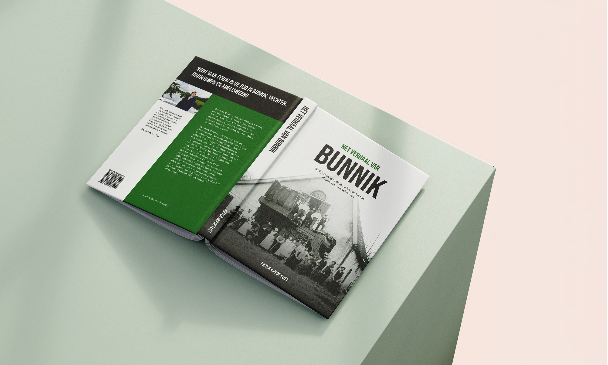

3000 jaar terug in de tijd in Bunnik, Vechten,
Rhijnauwen en Amelisweerd
Dit boek is verkrijgbaar bij:

Het verhaal van Bunnik gaat 3000 jaar terug in de tijd in Bunnik, Vechten, Rhijnauwen en Amelisweerd. Dit boek is een historische reconstructie en geeft een beeld van hoe hier alles is ontstaan en hoe het er in verschillende perioden heeft uitgezien.
Het verhaal van Bunnik is een verhaal van de rivier die lang haar eigen weg ging. Een verhaal van pioniers die zich vestigden op de hoger gelegen stroomruggen bij kruispunten van vaarwegen. Een verhaal van Romeinen die hier hun grootste castellum en haven bouwden. Een verhaal van de Utrechtse bisschoppen en de kerk. Een verhaal van de ontginningen. Een verhaal van ridderhofsteden en grootgrondbezitters. Een verhaal van hardwerkende boeren die hier een bestaan opbouwden en zorgden dat iedereen te eten had. Een verhaal van ambachtslieden en ondernemers. Een verhaal van een groeiend dorp dat toch een dorp bleef. Een verhaal in 400 pagina's, 15 hoofdstukken en ruim 500 afbeeldingen.